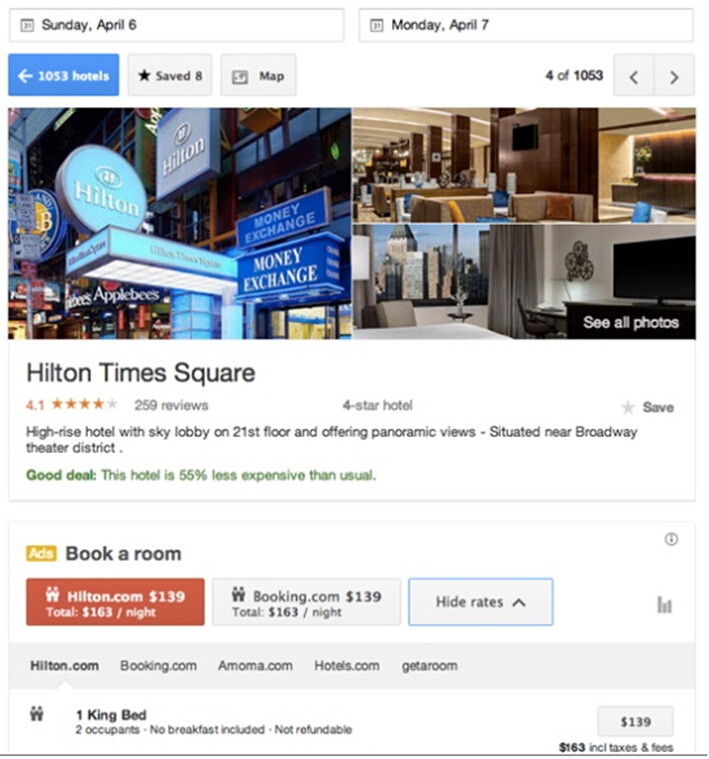
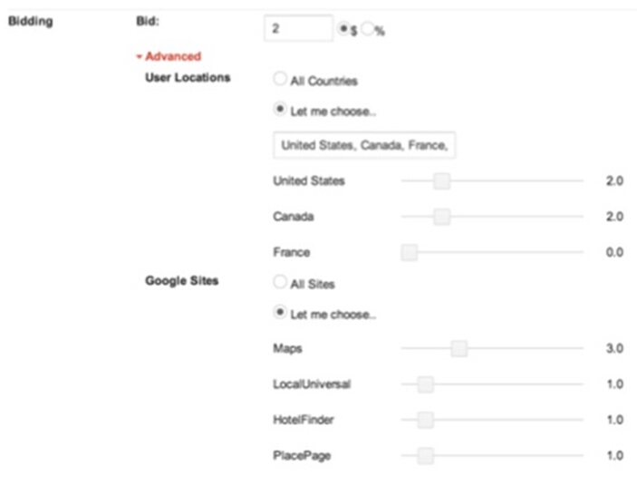
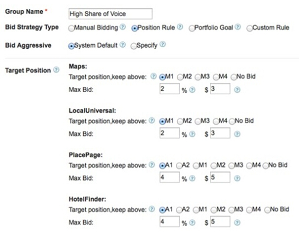
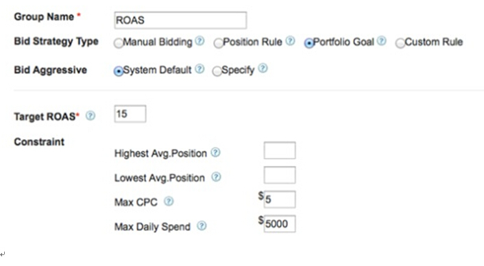
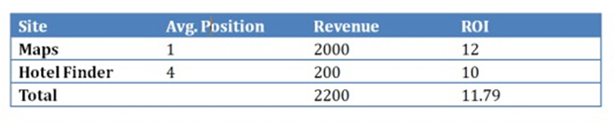
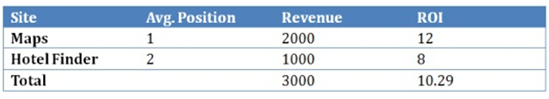
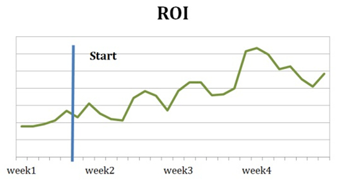
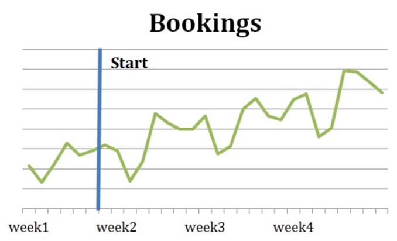

As we all know, Google entered the hotel metasearch game with the introduction of Google Hotel Price Ads (HPA) in a number of Google products.
These included Google Hotel Finder, Google Maps, Google+ Local and Google Search on desktop, tablet and, increasingly, mobile devices.
NB: This article is written by Wei Xia (VP of new products and services) and Quentin Moores (director of metaSearch business development) from DerbySoft.
According to Google:
“Hotel Price Ads is a feature that assists users who are researching travel by surfacing hotel rates and availability across Google properties”.
In a recent Google partner event during ITB Berlin, Nicola Simionato, Google’s general manager for travel in EMEA & APAC, explained why Google introduced HPA.
He quoted Google co-founder Larry Page:
“The perfect search engine should understand exactly what you mean and give you back exactly what you need.”
He then declared Google’s “Hotel Price Ads is NOT just another meta search experience!”
It is all part of Google vision about future of search: “Answer, Converse, Anticipate.” Google will be “committed to create the best hotel search experience on Search and Maps, across desktop/tablet/mobile” and “on Google Mobile Maps App” in 2014, according to Tom Mulders, Google’s senior program manager for HPA.
Google is expected to gradually shift more and more traffic to HPA, possibly at the expense of AdWords and organic SERP. With roughly two thirds of travel searches originating from Google, hotel marketers and advertising agencies could ignore this trend at their own peril.
In the same Google event, many partners, while excited about Google’s promise of more traffic and higher ROI for HPA, expressed their concerns on how to effectively manage and optimize this program.
First, a hotel must connect via its CRS or booking engine to Google through an HPA feed, which includes Hotel Feeds, Price Feeds and a Point of Sales configuration file.
This can be challenging given the complexity and dynamic nature of Google’s API and the requirement for suppliers to keep up with those changes while maintaining the high accuracy Google requires.
New features and merchandising opportunities are added frequently such as room bundling and tag lines.
Second, hotels are strangers to managing real time bidding for metasearch marketing, which is further complicated by the fact that HPA bidding, while the most sophisticated among all meta search engines, is far more complex than AdWord bidding.
The upshot of this is that either hotel suppliers are not getting enough click volume because of low bids, or they are bidding too high for positions that result in an inconsistent ROI.
Hotel suppliers and their agencies are having a hard time keeping up with the speed and complexity required to manage, tracking and reporting on Google HPA campaigns.
The good news is that help is available. Google promises to make it easy for small and independent hotels to participate and manage HPA programs with its own front-end, but there are several third party partners to help hotels to implement and manage their HPA campaigns.
Not all the tools and vendors are created equal. Some just provide basic connectivity services or manual/semi-automatic bidding support, while some provide advanced automatic bidding optimization.
So how do you choose which tool and partner to use and how to use it? In this article, we will focus on bidding, but HPA feed is equally important.
We will address this briefly at the end of this article and there will be more to come in future articles.
First let’s briefly summarize the process behind the bidding platform for Google HPA.

Google uses an auction model similar to the AdWords auction model:
A base bid is either a fixed fee per room night, or a percentage of room rate total.
But on top of base bid, you can specify a bid multiplier for a variety of factors. You can adjust the multipliers to increase or decrease your bids for a specific Google site, user country, device (mobile or desktop/tablet), and length of stay, and more to come…
So you can see, this can get quite complex, but equally powerful for targeting and rate optimization.
Let’s look at some of the tools available: 1. Manually manage bidding with the Google Partner Front End Google provides a free tool called Partner Front End to manage bidding online. Suppliers can manage the bidding manually though this UI for a property or a group of properties. It also provides some basic charts and reports. Suppliers can also bid up or down manually according to Google’s report.
Pros:
Cons:
Analytics – The reports and chart do not aggregate the performance data such as booking, conversion and ROI data, giving a limited picture of campaign performance.

This approach still manages bidding manually or by automating some tasks through some kind of “bulk bidding” or “budget”.
Some tools just allow you to set a fixed budget per month. You can spend this budget but it does not promise to optimize your bidding to meet your specific marketing objective such as ROI. Other platforms provide reporting analytics to help you identify “opportunities” or receive an “alert” or “signal” to adjust bids. However you still have to decide how and when to bid.
Pros:
Cons:
This algorithm allows you to automatically calculate the bids according to your marketing objective for a specific property. For example, a supplier that wishes to maintain a certain position for a hotel can use algorithmic bid management to calculate the bid automatically.
The supplier only needs to specify which position it wants to maintain, and the algorithm will predict the optimum bid and adjust the bid daily to reach the targeted position.
This algorithm works at the individual property level and can support individual marketing strategies independent of each other.
Pros:
Cons:

This approach optimizes the overall performance of a portfolio according to business goals such as maximizing revenue for a given budget for the entire hotel chain or a subset of hotels. It operates at the portfolio level rather than at the individual property level.

Pros:
Cons:
For example , a portfolio goal might be to maximize the overall revenue and maintain an ROI of at least 10. For a given hotel in this example, let us assume the current data is:

The question is, how should the supplier optimize the bidding for this portfolio to maximize revenue?
If the supplier treats these two sites independently, then both meet the minimum ROI target, so no optimization is necessary to maintain the position.
If the supplier wishes to increase the marketing budget, at first glance it would seem that the supplier should increase spending on “Google Maps” as its ROI is higher.
But in reality, the opposite is the case; as this hotel is already in position 1 for “Google Maps”, increased spending would not result in more bookings.
In other words, it is the past return that matters, so a past return that is marginal determines where the supplier should invest its next $1.
In the portfolio optimization algorithm, as long as the minimum is being met, the algorithm will do what it can to optimize the overall portfolio.
So, back to the example, by spending more to move the “Hotel Finder” position up, the supplier increases revenue to $1000, but ROI drops to 8. However, by combining these “Google Maps” and “Hotel Finder” for the portfolio, the supplier still maintains an ROI of 10 and maximizes the revenue while maintaining that constraint.
Combining sites together:

The revenue is increased from $2200 to $3000, though ROI is dropped from 11.79 to 10.29, it is still above target of 10.
Result: 36% increase in revenue, while still reaching ROI target > 10.
The same is true if the supplier wishes to maximize performance for multiple hotel properties across multiple sites.
Portfolio Bid Optimization is proven to deliver dramatic improvements toward reaching core metasearch marketing goals such as maximizing revenue, profit, or ROI.
Such improvements can often be seen immediately following implementation of new algorithms as evidenced by the following results of actual campaigns running DerbySoft’s Portfolio Optimization Algorithm:


2. Point of Sales Configuration
3. Rate and availability accuracy
4. Room bundles
5. Tag Lines
It is important to select a vendor who truly understand connectivity and has experience in managing Google HPA feeds.
Not all vendors have implemented all these features; some are using out-of-date methods like screen scraping to get inventory information which results in high rate discrepancies negating the effort and costs of bidding in the first place.